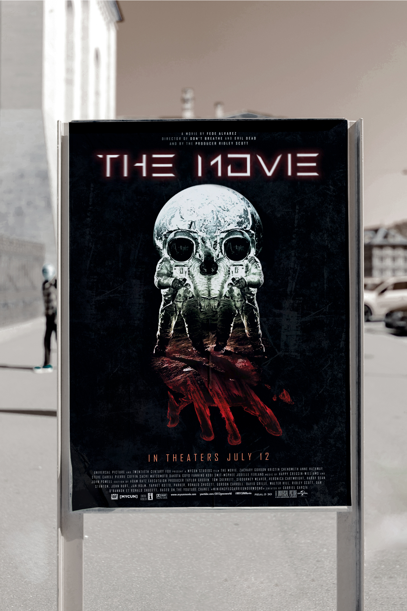
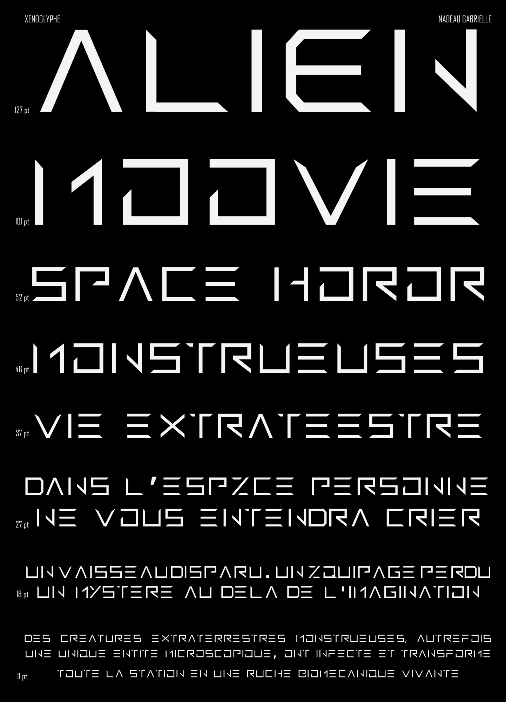
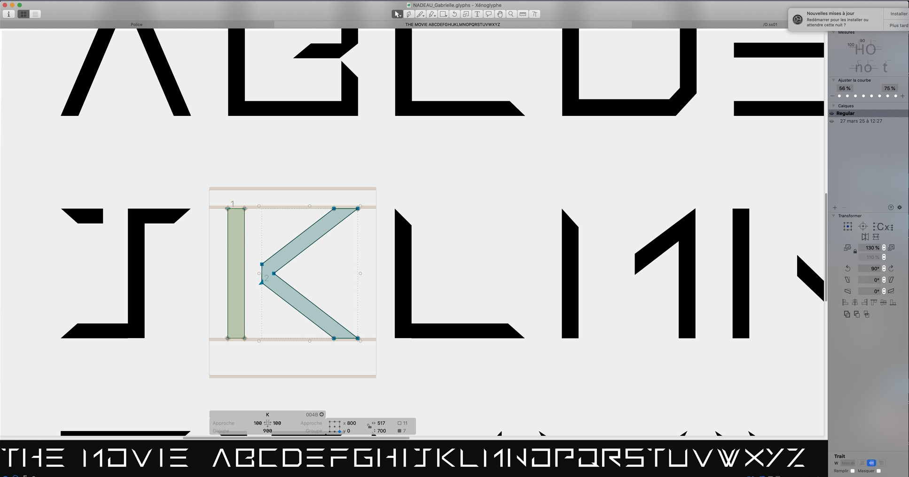

Mission :
Le projet consiste à concevoir une typographie custom, sur le logiciel glyphs, destinée à l’affiche d’un film de space horror, l’histoire d’une mission d’exploration spatiale envoyée enquêter sur la disparition d’un vaisseau ayant détecté un signal provenant d’une planète inconnue.
Réalisation :
On observe une volonté de synthétisatiser des caractères, cette simplification formelle produit une esthétique froide et technologique. Les formes géométriques strictes évoquent un univers scientifique ou futuriste. La disparition de certains repères typographiques familiers donne l’impression d’un alphabet étranger, comme s’il s’agissait d’un système d’écriture provenant d’une civilisation extraterrestre. Les extrémités pointues des caractères introduisent une tension visuelle. Ces angles aigus évoquent des formes tranchantes ou organiques (griffes, crocs, épines), ce qui suggère une forme de danger ou d’agressivité.


